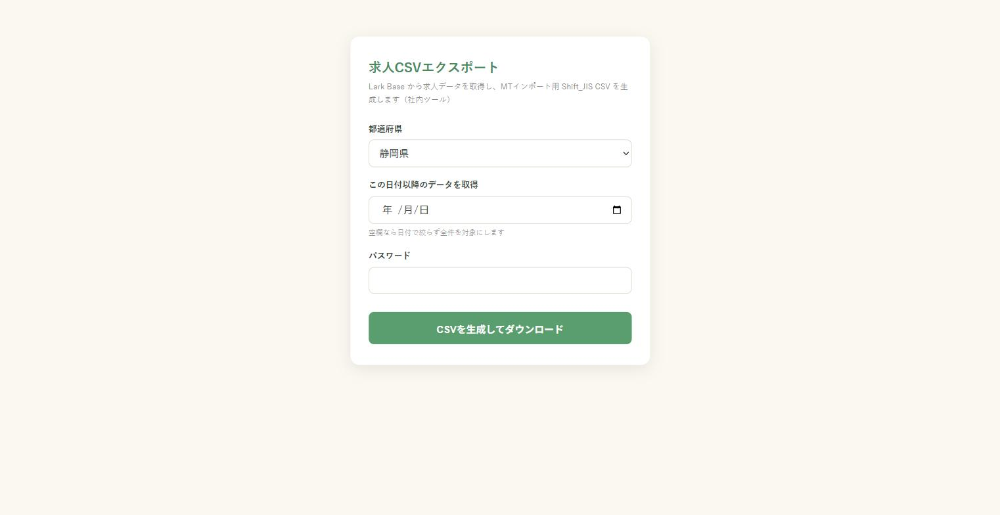
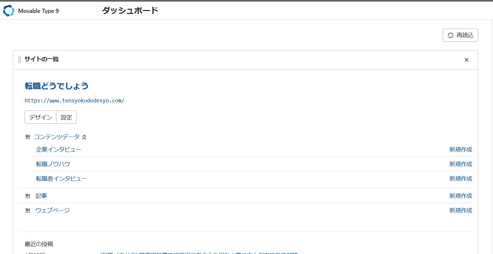
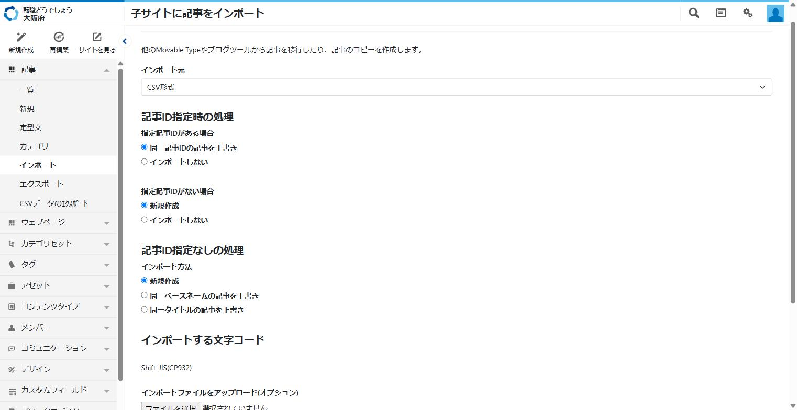
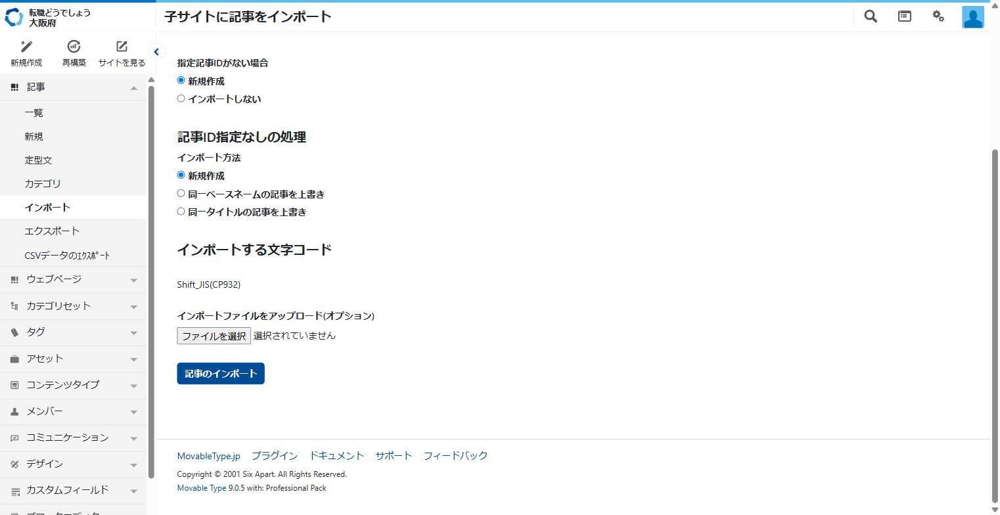
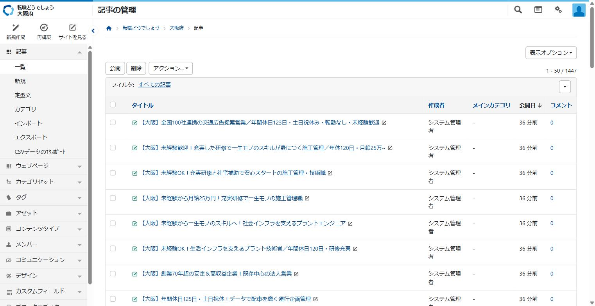
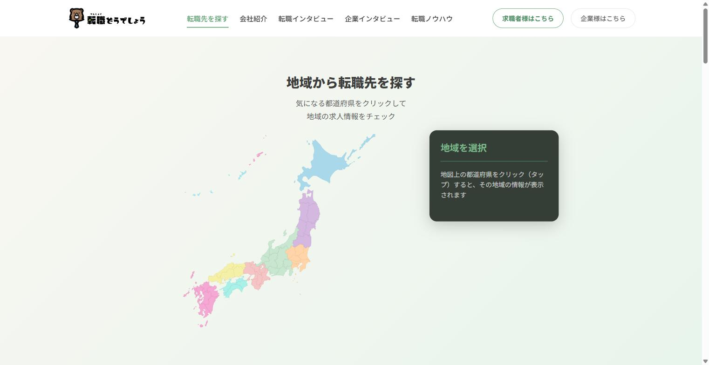
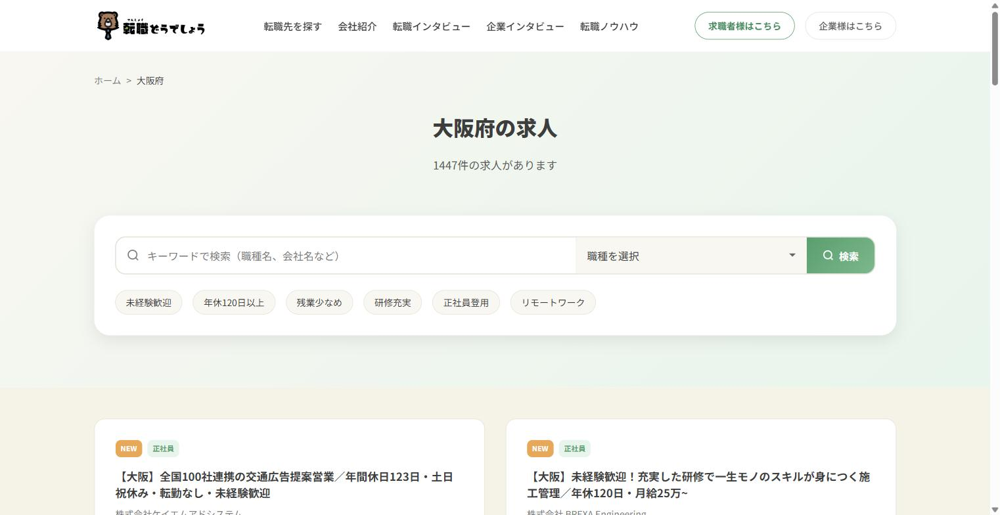

この作業について
Lark に登録された求人データをもとに CSV を生成し、CMS（Movable Type）に取り込んでサイトに公開するまでの手順です。全体の流れは次の5ステップです。
① CSVダウンロード▶
② ZIP展開▶
③ CMSへインポート▶
④ 公開▶
⑤ 表示確認
| 作業時間の目安 | ①〜③で15〜30分程度、④の公開処理に5〜15分、⑤の確認は公開の約30分後 |
|---|
| 実施タイミング | 稼働時間に2時間以上の余裕があるときに実施してください。残り30分未満しかない場合は次回に延期してください（公開処理がサーバーに負荷をかけるため、途中で作業を止めない） |
|---|
| 困ったときは | エラー画面や様子がおかしい画面のスクリーンショットを添えて須長へ連絡してください |
|---|
① CSVダウンロード（求人CSVエクスポートアプリ）
- ブラウザで
https://jobs-export.vercel.app を開く
- 都道府県：今回公開する都道府県を選択
- この日付以降のデータを取得：前回作業した日付を入力（この日付以降に Lark に登録された求人だけが対象になります。空欄のままだと全件が対象になるので注意）
- パスワード：共有されているパスワードを入力
- 「CSVを生成してダウンロード」ボタンを押す

求人CSVエクスポートアプリ。都道府県・日付・パスワードを入力してボタンを押すだけです
📌 補足
・件数が多い場合、ダウンロードが始まるまで数分かかることがあります。そのまま待ってください。
・件数が少なければ CSV ファイル1つ、多ければ複数の CSV をまとめた ZIP ファイルがダウンロードされます。
・処理が途中で止まってしまった（いつまでも終わらない）場合は、須長へ連絡してください。
② ZIPファイルの展開
- ダウンロードした ZIP ファイルをエクスプローラーで右クリック →「すべて展開」
- 展開したフォルダの中に
export_20260804_1of6.csv のような連番のファイルがあることを確認（この番号順に③でインポートします）
📌 補足 ZIP ではなく CSV が1つだけダウンロードされた場合は、展開は不要です。そのまま③へ進んでください。
③ CMS（Movable Type）へのインポート
3-1. CMSにログインして対象の都道府県を開く
https://www.tensyokudodesyo.com/mt/ にアクセスしてログイン- ダッシュボードの「サイトの一覧」から、今回公開する都道府県のサイト（例：大阪府）をクリック

ログイン後のダッシュボード。下にスクロールすると都道府県ごとのサイトが並んでいます
3-2. インポート画面を開いて設定する
- 左メニューの 記事 →「インポート」 をクリック
- インポート元 を「CSV形式」に変更（設定項目が下に表示されます）
- 以下のとおり設定されていることを確認する
設定内容（この4点を確認）
・インポート元：CSV形式
・指定記事IDがある場合：同一記事IDの記事を上書き
・指定記事IDがない場合：新規作成 ←ここが「インポートしない」になっていたら変更する
・記事ID指定なしの処理：新規作成

インポート元を「CSV形式」にした状態。ラジオボタンが上記のとおりになっているか確認します
3-3. ファイルを1つずつインポートする
- ページ下部の「ファイルを選択」で、②で展開した CSV の1つ目（1of6 など）を選択
- 「記事のインポート」ボタンを押し、完了画面が出るまで待つ
- 完了したら再度インポート画面に戻り、2つ目のファイルで同じ操作を繰り返す
- すべてのファイル（6分割なら6回）が終わるまで繰り返す

ファイルを選択して「記事のインポート」を押します。分割ファイルの数だけ繰り返します
⚠️ 注意
・ファイルは必ず1つずつ、番号順にインポートしてください（まとめて選択はできません）。
・どこまで取り込んだか分からなくならないよう、終わったファイル名をメモしておくと安心です。
3-4. 取り込み件数を確認する
- 左メニューの 記事 →「一覧」 を開く
- 右上の件数表示（例：
1 - 50 / 1447）が、インポートした分だけ増えていることを確認

記事一覧。右上の「1 - 50 / 1447」の総数がインポート前より増えていればOKです
④ 公開する
インポートした直後の求人は「非公開」の状態です。以下の手順で公開します。
- 記事一覧で、今回インポートした求人（非公開のもの）のチェックボックスにチェックを入れる（タイトル行の一番上のチェックボックスで、表示中のページを一括選択できます）
- 一覧上部の「公開」ボタンを押す
⚠️ 注意（重要）
・公開処理はサーバーに負荷がかかり、5〜15分程度かかります。処理中はブラウザを閉じずに待ってください。
・稼働時間の残りが30分未満のときは実施しないでください。2時間以上余裕のあるタイミングで行ってください。
・エラーが表示された場合は、その画面のスクリーンショットを撮って須長へ連絡してください。
⑤ 表示確認
公開処理から30分ほど時間をおいて、以下の2点を確認します。
5-1. CMS側の確認
- 記事一覧に戻り、公開した求人の中から4〜5件を開いて、タイトルや本文の内容が崩れていないか確認
5-2. サイト側の確認
https://www.tensyokudodesyo.com/ を開き、日本地図から対象の都道府県をクリック- 求人一覧ページが表示され、件数が増えていること・新しい求人が表示されることを確認

トップページの日本地図から対象の都道府県をクリックします

都道府県の求人一覧ページ。「◯◯件の求人があります」の件数と、新しい求人カードの表示を確認します
困ったときは
- 手順の途中でエラーが出た・画面の様子がおかしい → その画面のスクリーンショットを撮って須長へ連絡してください。作業はいったん中断してかまいません。
- アプリのダウンロードがいつまでも終わらない → 件数が多いと数分かかりますが、10分以上動きがない場合は連絡してください。
- どのファイルまでインポートしたか分からなくなった → 無理に続けず、状況を添えて連絡してください（重複登録を防ぐため）。